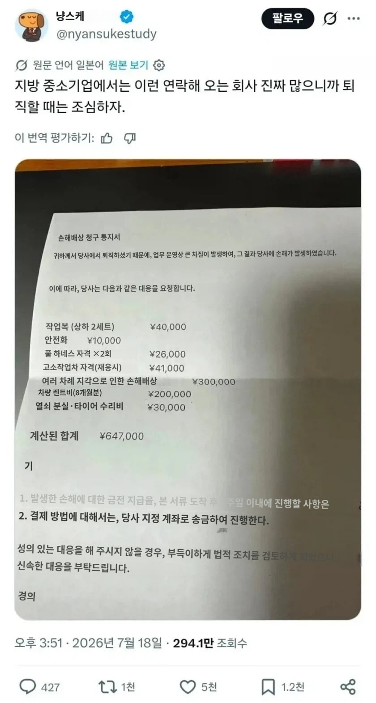

업무비용 상계 금지를 어기고 퇴직자한테 돈 한번 더 빨아보겠다고 빚달아두는 업체가 있어서
그러니까 우리나라에서 임금체불로 노무사 고용하는거랑 크게 다르지 않음

업무비용 상계 금지를 어기고 퇴직자한테 돈 한번 더 빨아보겠다고 빚달아두는 업체가 있어서
그러니까 우리나라에서 임금체불로 노무사 고용하는거랑 크게 다르지 않음
“블랙기업”의 원조국가가 저기인걸
한국도 고용노동부 있는데 대구는 단체로 최저시급 안지키고 임금 제대로 안주잖아 ㅋㅋㅋ
헉...
개버러지 지역감정충ㅋㅋㅋㅋ임금체불은 다른지역이 더많고 10만명당 최저임금 신고율도 전라광주랑 별차이도없더만ㅋㅋㅋㅋ
OECD 임금체불 1위 국가가 한국이래
도대체 어디에서 그런 조사를 한 거냐고
뭐 각국의 고용노동부에서 임금채불액 자체적으로 계산하니까 그거로 비교했나보지
https://www.dogdrip.net/dogdrip/715484825
내가 전에 찾아봤을땐 아닐 가능성이 높음
애초에 원 자료가 OECD 1위라고 말하는 통계가 아니었을텐데
임금체불 관련해서는 각국과 비교할 자료가 부족함.
위에 개붕이가 쓴 글에도 나오고.
한창 OECD 1위 이야기도 임금체불 2조 달했을 때 나왔던 이야기인데. 이 중 1조 8천억은 청산된거고. 실제 임금체불 금액은 2천억이었음.
게다가 우리나라처럼 퇴직금이 법적 의무화인 국가도 잘 없고. (임금체불 40% 이상 퇴직금 미지급에서 발생)
임금체불각 뜨면 해고 갈기면 되는 나라들과 비교하는 것도 힘듬.
요약 : 각 나라마다 임금 체계, 고용 체계가 달라서 비교가 힘들다.
그냥 단순히 연락이 두려워서 그러는 사람도 있더라
개판쳐놓고 나가는데 직접 그만둔다 말할 용기가 안 나서 퇴직대행 쓰는거지
퇴직대행 유명업체 대표와 아내 구속되고 나가리된걸로 아는데
게공선의 나라답고 군함도의 후예답다.
말그대로 중세잽랜드식 마인드임.
분명 강제노역인데 임금은 줌.
그런데 그 임금 안에 사용한 곡괭이 값 등등 공구값과 숙식비에 아프면 약줬다고 약값까지 청구해서 오히려 채무가 늘어나는 함정..
옛날 서부시대 탄광회사들이 쓰던방법 ㅋㅋ
차량렌트비는 뭐임 설마 업무용으로 근무시간에 끌고다닌걸 청구한다고?
ㅇㅇ 미친거지
저거 1명만 걸려라 수준이라던데 그냥 ㅈ까도 된다더라
저거 안내도 되지 않음?
씹어도 상관없음
걍 좆소에서 모지리들 한놈만 걸려라 하는거임 당연한 얘기지만 노동성에 말하면 철퇴 때려줌
얘네는 방송국이 남의 집 문에 발걸고 돈내노라고 소리지르는 나라임 ㅋㅋㅋㅋㅋㅋㅋㅋㅋ
저짓거리 한명만 걸려라 맞는데 사회 초년생들한테 저러는거 뭣모르고 당하니까
저쪽 나라는 기괴함 기업에 대한 처벌도 강하면서 기업의 편법도 엄청남
한국에 블랙기업 문화 뿌리내린 원조국가 다움 ㅋㅋㅋ
시발 ㅋㅋ 일햇는데 일한거돈달라하네
일본에서 주재원으로 생활하는데 걍 저 회사가 블랙기업인거고, 시발 요즘 일본 애새끼들 마인드 자체가 글러먹은게 제일 큼. 아마엔보 새끼들 앞에서는 하이하이 이지랄하면서 알겠다고 해놓고 뒤에서 딴말하고 욕하고 좆같이 지어내서 보고하고 그런게 많음. 앞에서는 아무말도 못하고 뒤에서 꿍얼꿍얼.
해외에서는 임금체불이 그냥 절도죄로 판단해서 없다는데?
ㅋㅋ 저걸 지들이 입증해야지 입증에 소요되는 비용이야 알아서 하시는거고
ㅈ까하면 안됨?
저거 역으로 협박같은걸로 소송걸면 어떻게 되나
ㅋㅋㅋ 일본법이 개병신도 아니고
저 청구는 말같지도 않은 요구임
일본은 고용노동부가 없나?